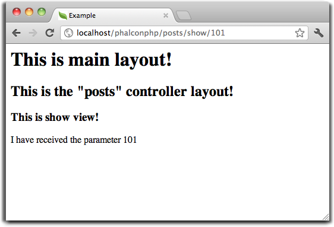

Содержание
Предыдущий раздел< ODM (Object-Document Mapper) Следующий разделНа этой странице |
Использование представлений (Views)¶Представления (views) — это пользовательский интерфейс вашего приложения. Чаще всего они представляют собой HTML-файлы со вставками PHP-кода, задача которого связана лишь с выводом данных. Представления управляют работой по передаче данных браузеру или любому другому средству, с помощью которого выполняются запросы к приложению. Phalcon\Mvc\View и Phalcon\Mvc\View\Simple отвечают за управление слоем представления в вашем MVC-приложении. Совместная работа Представлений и Контроллеров¶Как только какой-то определённый контроллер завершает свою работу, Phalcon автоматически передаёт управление компоненту представлений. Этот компонент ищет в папке представлений такое, название которое совпадает с последним исполнившимся контроллером, а затем — файл, имя которого соответствует последнему выполненному действию (action). Например, запрос по URL http://127.0.0.1/blog/posts/show/301 Phalcon будет разбирать следующим образом:
Dispatcher будет искать “PostsController” и его метод “showAction”. Листинг простейшего контроллера для этого примера: <?php
class PostsController extends \Phalcon\Mvc\Controller
{
public function indexAction()
{
}
public function showAction($postId)
{
// Передать параметр $postId в представление
$this->view->setVar("postId", $postId);
}
}
Метод setVar позволяет создавать переменные, которые могут быть использованы в шаблоне. В примере выше показано, как передать переменную $postId. Иерархия¶Phalcon\Mvc\View поддерживает иерархическую файловую структуру. Это позволяет определять местонахождение как основных шаблонов (main layout), так и шаблонов для отдельных контроллеров (controller layout) с помощью задания имён для соответствующих им папок. В качестве движка по умолчанию компонент использует сам PHP, поэтому представления должны иметь расширение .phtml. Если в качестве папки с представлениями используется app/views, то компонент автоматически будет искать следующие 3 файла.
Совершенно не обязательно использовать все упомянутые выше файлы. Phalcon\Mvc\View просто пропустит тот файл, которого нет, и перейдёт к следующему. Если же существуют все три файла представлений, то они будут обработаны следующим образом: <!-- app/views/posts/show.phtml -->
<h3>This is show view!</h3>
<p>I have received the parameter <?php echo $postId ?></p>
<!-- app/views/layouts/posts.phtml -->
<h2>This is the "posts" controller layout!</h2>
<?php echo $this->getContent() ?>
<!-- app/views/index.phtml -->
<html>
<head>
<title>Example</title>
</head>
<body>
<h1>This is main layout!</h1>
<?php echo $this->getContent() ?>
</body>
</html>
Обратите внимание на строчки, в которых происходит вызов метода $this->getContent(). Он указывает Phalcon\Mvc\View, где необходимо вывести результат, полученный при обработке представления, находящегося выше в иерархической структуре. Вывод для нашего примера будет представлять собой следующее:

Сгенерированный HTML-код по этому запросу: <!-- app/views/index.phtml -->
<html>
<head>
<title>Example</title>
</head>
<body>
<h1>This is main layout!</h1>
<!-- app/views/layouts/posts.phtml -->
<h2>This is the "posts" controller layout!</h2>
<!-- app/views/posts/show.phtml -->
<h3>This is show view!</h3>
<p>I have received the parameter 101</p>
</body>
</html>
Использование Шаблонов¶Шаблоны — это представления, которые могут быть общими для разных действий контроллера. По сути они играют роль представлений контроллеров (controller layouts), поэтому их необходимо помещать папку layouts. <?php
class PostsController extends \Phalcon\Mvc\Controller
{
public function initialize()
{
$this->view->setTemplateAfter('common');
}
public function lastAction()
{
$this->flash->notice("These are the latest posts");
}
}
<!-- app/views/index.phtml -->
<!DOCTYPE html>
<html>
<head>
<title>Blog's title</title>
</head>
<body>
<?php echo $this->getContent() ?>
</body>
</html>
<!-- app/views/layouts/common.phtml -->
<ul class="menu">
<li><a href="/">Home</a></li>
<li><a href="/articles">Articles</a></li>
<li><a href="/contact">Contact us</a></li>
</ul>
<div class="content"><?php echo $this->getContent() ?></div>
<!-- app/views/layouts/posts.phtml -->
<h1>Blog Title</h1>
<?php echo $this->getContent() ?>
<!-- app/views/posts/last.phtml -->
<article>
<h2>This is a title</h2>
<p>This is the post content</p>
</article>
<article>
<h2>This is another title</h2>
<p>This is another post content</p>
</article>
Вывод получится следующим: <!-- app/views/index.phtml -->
<!DOCTYPE html>
<html>
<head>
<title>Blog's title</title>
</head>
<body>
<!-- app/views/layouts/common.phtml -->
<ul class="menu">
<li><a href="/">Home</a></li>
<li><a href="/articles">Articles</a></li>
<li><a href="/contact">Contact us</a></li>
</ul>
<div class="content">
<!-- app/views/layouts/posts.phtml -->
<h1>Blog Title</h1>
<!-- app/views/posts/last.phtml -->
<article>
<h2>This is a title</h2>
<p>This is the post content</p>
</article>
<article>
<h2>This is another title</h2>
<p>This is another post content</p>
</article>
</div>
</body>
</html>
Управление уровнями отрисовки (Rendering Levels)¶Как уже говорилось выше, Phalcon\Mvc\View поддерживает иерархию представлений. Для управления уровнями отрисовки используется метод PhalconMvc\View::setRenderLevel(). Его можно вызвать в контроллере или вышестоящем уровне представления для изменения стандартного процесса отрисовки. <?php
use Phalcon\Mvc\Controller,
Phalcon\Mvc\View;
class PostsController extends Controller
{
public function indexAction()
{
}
public function findAction()
{
// Ajax-ответ, генерация представления не нужна
$this->view->setRenderLevel(View::LEVEL_NO_RENDER);
//...
}
public function showAction($postId)
{
// Показать только представление, относящееся к конкретному действию контроллера
$this->view->setRenderLevel(View::LEVEL_ACTION_VIEW);
}
}
Допустимые уровни отрисовки:
Отключение уровней отрисовки¶Если какие-то уровни не используются в приложении, их можно выключить для всего приложения: <?php
use Phalcon\Mvc\View;
$di->set('view', function(){
$view = new View();
// Отключить несколько уровней
$view->disableLevel(array(
View::LEVEL_LAYOUT => true,
View::LEVEL_MAIN_LAYOUT => true
));
return $view;
}, true);
или только для какой-либо его части: <?php
use Phalcon\Mvc\View,
Phalcon\Mvc\Controller;
class PostsController extends Controller
{
public function indexAction()
{
}
public function findAction()
{
$this->view->disableLevel(View::LEVEL_MAIN_LAYOUT);
}
}
Переопределение Представлений (Picking Views)¶Как уже упоминалось выше, Phalcon\Mvc\View, работающий под управлением Phalcon\Mvc\Application, по умолчанию будет использовать представления соответствующие последним выполнившимся контроллеру и действию. Это можно переопределить с помощью метода Phalcon\Mvc\View::pick(): <?php
class ProductsController extends \Phalcon\Mvc\Controller
{
public function listAction()
{
// Использовать для отрисовки "views-dir/products/search"
$this->view->pick("products/search");
// Использовать для отрисовки "views-dir/products/list"
$this->view->pick(array('products'));
// Использовать для отрисовки "views-dir/products/search"
$this->view->pick(array(1 => 'search'));
}
}
Отключение представления¶Если в контроллере нет никакого вывода, то отключить компонент представления, чтобы избежать выполнение ненужных действий: <?php
class UsersController extends \Phalcon\Mvc\Controller
{
public function closeSessionAction()
{
// Тут завершилась сессия
//...
// HTTP редирект
$this->response->redirect('index/index');
// Отключение компонента представлений
$this->view->disable();
}
}
Вы можете вернуть объект ‘response’, чтобы вручную отключить компонент представления: <?php
class UsersController extends \Phalcon\Mvc\Controller
{
public function closeSessionAction()
{
//Close session
//...
//An HTTP Redirect
return $this->response->redirect('index/index');
}
}
Простая отрисовка¶Phalcon\Mvc\View\Simple — это аналогичный Phalcon\Mvc\View компонент. Он сохраняет основной подход Phalcon\Mvc\View, но не реализует иерархию файлов, что, по сути, является основной особенностью его коллеги. Этот компонент позволяет разработчику определять какой файл представления использовать и где он находится. Кроме того, компонент может использовать структуру наследования в шаблонизаторе Volt и ему подобных. Компонент представлений по-умолчанию может быть замещён в контейнере сервисов: <?php
$di->set('view', function() {
$view = new Phalcon\Mvc\View\Simple();
$view->setViewsDir('../app/views/');
return $view;
}, true);
Процесс автоматической отрисовки может быть отключен в Phalcon\Mvc\Application (если это необходимо): <?php
try {
$application = new Phalcon\Mvc\Application($di);
$application->useImplicitView(false);
echo $application->handle()->getContent();
} catch (\Exception $e) {
echo $e->getMessage();
}
Для отрисовки необходимо вызвать метод render, указав конкретный путь к представлению, которое необходимо отрисовать: <?php
class PostsController extends \Phalcon\Mvc\Controller
{
public function indexAction()
{
//Render 'views-dir/index.phtml'
echo $this->view->render('index');
//Render 'views-dir/posts/show.phtml'
echo $this->view->render('posts/show');
//Render 'views-dir/index.phtml' passing variables
echo $this->view->render('index', array('posts' => Posts::find()));
//Render 'views-dir/posts/show.phtml' passing variables
echo $this->view->render('posts/show', array('posts' => Posts::find()));
}
}
Части шаблонов (Partials)¶Части шаблонов (Partial templates) — это ещё один способ дробления процесса отрисовки на более простые части, которые впоследствии могут быть использованы в различных частях приложения. С помощью них можно вынести код отрисовки какой-то конкретной части шаблона в отдельный файл. Использование части шаблонов аналогично использованию подпрограмм: детали реализации выносятся из представления с целью сделать код более простым и понятным. Например, вы могли бы получить такой шаблон: <div class="top"><?php $this->partial("shared/ad_banner") ?></div>
<div class="content">
<h1>Robots</h1>
<p>Check out our specials for robots:</p>
...
</div>
<div class="footer"><?php $this->partial("shared/footer") ?></div>
Метод partial() принимает в качестве второго параметра массив переменных, которые будут доступны только в пределах части шаблона: <?php $this->partial("shared/ad_banner", array('id' => $site->id, 'size' => 'big')) ?>
Передача переменных контроллера¶Phalcon\Mvc\View позволяет использовать в каждом контроллере переменную компонента представления ($this->view). Её можно использовать, чтобы устанавливать значения переменных представления непосредственно в действиях контроллера. Для этого используется метод setVar(). <?php
<?php
class PostsController extends \Phalcon\Mvc\Controller
{
public function indexAction()
{
}
public function showAction()
{
// Передаёт все посты во представление
$this->view->setVar("posts", Posts::find());
// Используется "магический" сеттер
$this->view->posts = Posts::find();
// Передача сразу нескольких переменных с помощью массива
$this->view->setVars(array(
'title' => $post->title,
'content' => $post->content
));
}
}
Первым параметром метода setVar() передаётся название переменной, которая будет создана и может быть использована в представлении. Эта переменная может быть любого типа, как простым, например, строкой или числом, так и сложной структурой вроде массива или коллекции объектов. <div class="post">
<?php
foreach ($posts as $post) {
echo "<h1>", $post->title, "</h1>";
}
?>
</div>
Использование моделей в слое представления¶Модели приложения всегда доступны из слоя представления. Во время исполнения Phalcon\Loader автоматически создаёт их копии: <div class="categories">
<?php
foreach (Categories::find("status = 1") as $category) {
echo "<span class='category'>", $category->name, "</span>";
}
?>
</div>
Хотя и существует возможность вызова таких методов модели, как insert() или update(), это не рекомендуется, так как при этом становится невозможной передача выполнения другому контроллеру в случае возникновения ошибки или исключительной ситуации. Кэширование фрагментов Представления¶При разработке динамических веб-сайтов некоторые их области могут изменяться достаточно редко и результат вывода будет совпадать для похожих запросов. Для увеличения производительности Phalcon\Mvc\View предоставляет возможность кэширования частей или даже всего результата отрисовки. Phalcon\Mvc\View используется совместно с Phalcon\Cache, для обеспечения простой способ кэширования частей вывода. Вы можете вручную установить обработчик кэша или глобальный обработчик: <?php
class PostsController extends \Phalcon\Mvc\Controller
{
public function showAction()
{
// Кэширование с использованием настроек по умолчанию
$this->view->cache(true);
}
public function showArticleAction()
{
// Кэширование на один час
$this->view->cache(array(
"lifetime" => 3600
));
}
public function resumeAction()
{
// Кэширование представления этого действия на один день с ключем "resume-cache"
$this->view->cache(
array(
"lifetime" => 86400,
"key" => "resume-cache",
)
);
}
public function downloadAction()
{
// Использование стороннего сервиса для кэширования
$this->view->cache(
array(
"service" => "myCache",
"lifetime" => 86400,
"key" => "resume-cache",
)
);
}
}
Если ключ кэша не задан, то компонент автоматически создаёт его на основе md5 суммы имени текущего представления. Это хороший способ задания уникального ключа для кэша конкретного представления. Когда компонент Представления должен что-то закэшировать, он запрашивает сервис кэша у контейнера сервисов. По соглашению этот сервис называется “viewCache”: <?php
use Phalcon\Cache\Frontend\Output as OutputFrontend,
Phalcon\Cache\Backend\Memcache as MemcacheBackend;
// Назначение сервиса кэширования представлений
$di->set('viewCache', function() {
// Кэширование данных на сутки по умолчанию
$frontCache = new OutputFrontend(array(
"lifetime" => 86400
));
// Настройки соединения с Memcached
$cache = new MemcacheBackend($frontCache, array(
"host" => "localhost",
"port" => "11211"
));
return $cache;
});
Использование кэширования представлений бывает полезно, чтобы избежать выполнение действий контроллеров, направленных на получение данных, которые используются для отображения в представлениях. Для достижения этой цели необходимо однозначно идентифицировать каждый кэш с помощью ключа. Прежде чем выполнять вычисления или запросы для отображаемых в представлении данных, необходимо убедиться, что кэш не существует или его срок истек: <?php
class DownloadController extends \Phalcon\Mvc\Controller
{
public function indexAction()
{
// Проверяет, кэш с ключом "downloads" на существование или истёкший срок
if ($this->view->getCache()->exists('downloads')) {
// Запрос последних загрузок
$latest = Downloads::find(array(
'order' => 'created_at DESC'
));
$this->view->latest = $latest;
}
// Включает кэширование с ключом "downloads"
$this->view->cache(array(
'key' => 'downloads'
));
}
}
Пример реализации кэширования фрагментов — PHP alternative site. Шаблонизаторы¶Шаблонизаторы помогают дизайнерам создавать представления без использования сложного синтаксиса. Phalcon имеет встроенный мощный и одновременно быстрый шаблонизатор Volt. Кроме того, Phalcon\Mvc\View позволяет использовать другие шаблонизаторы вместо обычного PHP или Volt. Использование различных шаблонизаторов, как правило, требует сложного разбора кода с применением внешних PHP-библиотек, генерирующих результат для пользователя. Это, в свою очередь, увеличивает количество ресурсов, используемых приложением. Если используется внешний шаблонизатор, Phalcon\Mvc\View обеспечивает иерархию файловой структуры и по-прежнему предоставляет доступ к API из этих шаблонов, но с чуть большими затратами. Этот компонент использует адаптеры, что позволяет Phalcon общаться с внешними шаблонизаторами единым образом. Рассмотрим, как это происходит. Создание собственного адаптера для шаблонизатора¶Существует множество шаблонизаторов, которые вы можете подключить или создать свой собственный. Первый шаг к использованию внешнего шаблонизатора — это создание адаптера для него. Адаптер шаблонизатора — это класс, который служит мостом Phalcon\Mvc\View и самим шаблонизатором. Обычно необходимо реализовать всего два метода: _construct() и render(). В первый передаются экземпляр Phalcon\Mvc\View и контейнер DI, используемый в приложении. Во второй — абсолютный путь к файлу представления и параметры, устанавливаемые с помощью $this->view->setVar(). Их можно использовать, как только в них появится необходимость. <?php
class MyTemplateAdapter extends \Phalcon\Mvc\View\Engine
{
/**
* Конструктор адаптера
*
* @param \Phalcon\Mvc\View $view
* @param \Phalcon\DI $di
*/
public function __construct($view, $di)
{
// Инициализация адаптера
parent::__construct($view, $di);
}
/**
* Отрисовывает представление с помощью шаблонизатора
*
* @param string $path
* @param array $params
*/
public function render($path, $params)
{
// Доступ к view
$view = $this->_view;
// Доступ к настройкам
$options = $this->_options;
//Render the view
//...
}
}
Изменение шаблонизатора¶Вы можете изменить или дополнить шаблонизатор из контроллера следующим образом: <?php
class PostsController extends \Phalcon\Mvc\Controller
{
public function indexAction()
{
// Назначение шаблонизатора
$this->view->registerEngines(
array(
".my-html" => "MyTemplateAdapter"
)
);
}
public function showAction()
{
// Использование нескольких шаблонизаторов
$this->view->registerEngines(
array(
".my-html" => 'MyTemplateAdapter',
".phtml" => 'Phalcon\Mvc\View\Engine\Php'
)
);
}
}
Вы можете полностью заменить шаблонизатор или использовать несколько шаблонизаторов одновременно. Метод Phalcon\Mvc\View::registerEngines() принимает в качестве параметра массив, в котором описываются данные шаблонизаторов. Ключами массива в этом случае будут расширения файлов, что помогает отличить их друг от друга. Файлы шаблонов, относящиеся к этим шаблонизаторам должны иметь соответствующие расширения. Порядок выполнения шаблонизаторов определяется порядком, в котором они описаны в Phalcon\Mvc\View::registerEngines(). Если Phalcon\Mvc\View обнаружит два представления с одинаковым именами, но разными расширениями, то он отрисует тот, который был указан первым. Если вы хотите зарегистрировать шаблонизатор или назначить его для любого запроса в приложении, вы можете сделать это при создании сервиса представления: <?php
// Настройка компонента представления
$di->set('view', function() {
$view = new \Phalcon\Mvc\View();
// A trailing directory separator is required
$view->setViewsDir('../app/views/');
$view->registerEngines(array(
".my-html" => 'MyTemplateAdapter'
));
return $view;
}, true);
Адаптеры для некоторых шаблонизаторов можно найти здесь: Phalcon Incubator. Внедрение сервисов в Представление¶Каждое представление, исполняемое внутри экземпляра Phalcon\DI\Injectable получает простой доступ к сервисам приложения. Следующий пример демонстрирует как можно написать ajax request на jQuery используя url из фреймворка. Сервис “url” (обычно это Phalcon\Mvc\Url) внедрён в представление и доступен как свойство с таким же именем: <script type="text/javascript">
$.ajax({
url: "<?php echo $this->url->get("cities/get") ?>"
})
.done(function() {
alert("Done!");
});
</script>
Отдельное использование компонента¶Все компоненты в Phalcon могут быть использованы по-отдельности благодаря их слабой связи друг с другом. Ниже приводится пример самостоятельного использования Phalcon\Mvc\View: Иерархическая отрисовка¶Использование Phalcon\Mvc\View в качестве самостоятельного компонента: <?php
$view = new \Phalcon\Mvc\View();
//A trailing directory separator is required
$view->setViewsDir("../app/views/");
// Передача переменных в представление
$view->setVar("someProducts", $products);
$view->setVar("someFeatureEnabled", true);
// Начало буферизации вывода
$view->start();
// Отрисовка всей иерархии представлений, связанной с products/list.phtml
$view->render("products", "list");
// Конец буферизации вывода
$view->finish();
echo $view->getContent();
Так же доступен короткий синтаксис: <?php
$view = new \Phalcon\Mvc\View();
echo $view->getRender('products', 'list',
array(
"someProducts" => $products,
"someFeatureEnabled" => true
),
function($view) {
// Установка дополнительных опций
$view->setViewsDir("../app/views/");
$view->setRenderLevel(Phalcon\Mvc\View::LEVEL_LAYOUT)
}
);
Простая отрисовка¶Использование Phalcon\Mvc\View\Simple в качестве самостоятельного компонента: <?php
$view = new \Phalcon\Mvc\View\Simple();
// Обязательно закрывающий слеш
$view->setViewsDir("../app/views/");
// Возвращает результат отрисовки в виде строки
echo $view->render("templates/welcomeMail");
// Передача параметров для отрисовки
echo $view->render("templates/welcomeMail", array(
'email' => $email,
'content' => $content
));
События компонента представлений¶Phalcon\Mvc\View и Phalcon\Mvc\View могут отправлять события EventsManager, если последний представлен. Тип событий — “view”. Некоторые из них, возвращая булевое значение false могут остановить текущую операцию. Поддерживаются следующие события:
Пример ниже демонстрирует как назначить слушателей (listeners) для этого компонента: <?php
$di->set('view', function() {
// Создание обработчика событий
$eventsManager = new Phalcon\Events\Manager();
// Назначение слушателя для событий типа "view"
$eventsManager->attach("view", function($event, $view) {
echo $event->getType(), ' - ', $view->getActiveRenderPath(), PHP_EOL;
});
$view = new \Phalcon\Mvc\View();
$view->setViewsDir("../app/views/");
// Назначение обработчика событий для компонента представления
$view->setEventsManager($eventsManager);
return $view;
}, true);
Следующий пример показывает, как создать плагин, который очищает/исправляет HTML, сгенерированный с использованием Tidy: <?php
class TidyPlugin
{
public function afterRender($event, $view)
{
$tidyConfig = array(
'clean' => true,
'output-xhtml' => true,
'show-body-only' => true,
'wrap' => 0,
);
$tidy = tidy_parse_string($view->getContent(), $tidyConfig, 'UTF8');
$tidy->cleanRepair();
$view->setContent((string) $tidy);
}
}
// Назначение плагина в качестве слушателя
$eventsManager->attach("view:afterRender", new TidyPlugin());
|